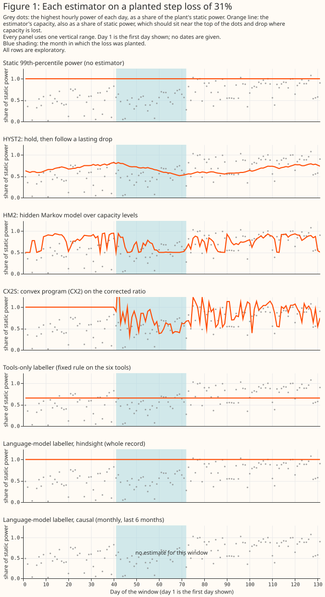

Claude Sonnet 5.5 found about 1 in 7 planted one-month solar losses and all 12 of a 60% loss lasting 90 days; the planned contrasts are untested
The question. A solar plant's usable capacity can fall for weeks (a failed string of panels, a network operator's export limit). A forecast that divides by a fixed capacity then errs, and the first capacity study had no way to tell real falls from noise. This study hides synthetic losses ("planted losses") in six real plants' power records and asks whether Claude Sonnet 5.5 can write down when each plant's capacity changed. The model is given the output of fixed calculations (the "tools": tables and two charts, such as the ratio of power to a physics-model estimate and a list of candidate change dates). The model answers with a list of dated capacity values (a "labeller"). A "hit" is an answer that marks a drop near the loss's start and a recovery near its end. "Static power" is a plant's fixed 99th-percentile output, so "holding static power" means estimating no change. Flexpectation is this project's forecast product.
Bottom line. In the planned round, the model hit 0 of 32 planted one-month losses and a fixed rule on the tools hit 1. The planned comparisons (C1 to C3) are untested, because the positive control, a set of 30% losses the model should be able to find, needed a pass mark of 80% and the model found 2 of 17. Later rounds were designed after seeing results ("post hoc"), except round 3, whose one new rule was written down before it ran ("pre-registered"). In round 3 the model hit 2 of 32 events (6%; 95% interval 2% to 20%), and pooled with six further fresh draws it hit 18 of 129 (14%; 9% to 21%), against 13 of 129 (10%; 6% to 17%) for the best fixed rule and 0 for holding static power. Its capacity error (5.6 points) was no better than the fixed rule's (5.3) or static power's (5.4). For larger losses it did better: it hit all 12 of a 60% loss lasting 90 days, 5 of 12 of a 30% loss lasting 90 days, and 5 of 12 of a 60% loss lasting 30 days. For Flexpectation, a language-model labeller is not ready to serve as a reference for small losses. With two prompts, one model, and two samples, no arm passed the 80% control, so the study cannot say whether the model can follow a 30% one-month loss.
What the figure and the rounds show
Figure 1 shows the estimators this study compares on one planted loss. Each panel draws one estimator's capacity (orange line) over the plant's daily maximum power (grey dots), both as a share of static power, with the planted month shaded. The panels are static power, three estimators from the first study rerun with a seasonal correction (HYST2, HM2, CX2S), the fixed rule on the tools, the model's labels from the whole record ("hindsight"), and the model's labels from data up to each issue date ("causal", shown only for the last 6 months).

The four rounds. Round 1 (planned) gave the model the tools and a prompt. Round 2 (post hoc) added a local scan (each 30-day window against its neighbours) and a softer prompt. Round 3 (pre-registered) fixed one flaw that round 2 exposed: round 2's hard checks, which drop implausible labels, rejected labels the scan supported. Round 4 (post hoc) repeated round 3's arm on six more draws and added an easy case and a size-by-duration grid. Each "draw" is a fresh set of planted losses, one of each shape at each plant, 16 or 17 events. Hit rates are for events with at least one hit, with Wilson 95% intervals that treat events as independent although events in one draw share a plant record and its weather. The design details, the checks, the model route, and the spend guard are in the study folder's README. The four rounds cost US\(12.15 of a US\)15 ceiling. Round 4 stopped on the spending guard during draw 13, so the pooled draws are 05 to 12 and not the planned 05 to 14. The guard's per-call cap was lowered from US\(1 to US\)0.25 for round 4, because the dearest earlier call cost US\(0.07 and a US\)1 cap would have stopped the run after about US$3.00. The stop was arithmetic and not a function of any answer. The partial draw 13 answers are excluded from every table.
Results
Part 1: only HYST2 stayed within the false-movement gate, and it recovered nothing
| Estimator | Mean absolute capacity error, 32 planted losses (points) | Days that moved, 23 quiet plant-months | Mean delay to find a step (days) |
|---|---|---|---|
| Static power | 5.17 | 0.0% | not applicable |
| HYST2 (drop 15%, 3 days) | 5.31 | 4.1% | 12.4 |
| HM2 (stay 0.95, spread 0.2) | 3.59 | 13.8% | 6.2 |
| CX2S (the first study's tuned CX2) | 2.39 | 59.7% | 2.1 |
The gate is 10% of quiet days moving, and no HM2 setting passed it, so the HM2 row is its least-moving setting. The 23 quiet months both tune and score the gate, so HYST2's pass is in-sample. The seasonal correction cut HM's false movement from the first study's 31.5% to 13.8%.
Round 1 (planned): the model found no planted loss, and the control failed
The model with the tools hit 0 of 32 losses (95% interval 0% to 11%), and the model on weekly summaries hit 0. The tools' changepoint list had a down candidate near the start for 3 of the 32 losses, and the model marked none of them; for two it answered no change, and round 1's prompt asked for no reason. The planned contrasts were C1 (tools plus model against tools only, +0.64 points [−0.34, +2.11] resampling events) and C2 (against the model on weekly summaries, +1.04 [+0.00, +2.62]). They are untested because the positive control failed: the model found 2 of 17 steps of 30%, and rescored per run of adjacent planted months (post hoc) 5 of 13, both under the 80% pass mark. No model arm hit any loss, so C2's nominal "worse" verdict (its lower bound is +0.004) is not a difference in detection. A set of 32 events could never have powered C1 or C2, which need about 90 to 100.
Round 2 (post hoc): a local scan helped the fixed rule, and conflicting checks cost the model its hits
On draws 03 and 04 (34 losses) the fixed rule on the scan hit 5 (15%; 6% to 30%) against 0 for round 1's rule, and the model hit 6 events (18%; 8% to 34%) before the hard checks and 1 after them. The checks conflicted with the evidence: a step had to lie near a changepoint candidate, but the model now also saw scan episodes. The fixed rule beat round 1's by 1.1 points of error (interval −2.3 to −0.03), and the model was no better than the fixed rule (+0.25 [−0.5, +1.0]). Null-record answers scored against the same dates hit none of the 34, so the hits are not chance. Of the 12 no-change notes on these draws, 5 call the scan's episodes seasonal or weather, for example "the local-scan episodes are mostly winter/summer seasonal-correction artifacts that recur every year".
Rounds 3 and 4: with the amended check, the model's hit rate was about 14%
The amended check also accepts a label when a scan episode starts or ends within 14 days. The amended check was written down and tested before round 3 ran, and round 3's draws 05 and 06 are its only pre-registered test.
| Arm (events with a hit; Wilson 95%) | Round 3 alone (32) | Draws 07 to 12 (97) | Pooled draws 05 to 12 (129) | Mean error, pooled (points) |
|---|---|---|---|---|
| Holding static power | 0 | 0 | 0 (0% to 3%) | 5.4 |
| Fixed rule on the scan | 3 (9%) | 10 (10%) | 13 (10%; 6% to 17%) | 5.3 |
| Model, original checks | 0 | 4 (4%) | 4 (3%; 1% to 8%) | 8.1 |
| Model, amended checks | 2 (6%; 2% to 20%) | 16 (16%; 10% to 25%) | 18 (14%; 9% to 21%) | 5.6 |
The model's pooled rate is above the fixed rule's, but no paired test is given, and the model's error is higher (5.6 against 5.3). By planted size the model hit 0% of losses under 15%, 5% of those from 15% to 25%, and 26% of those of 25% or more (answers, pooled).
Easy case and grid (post hoc): size and duration both help
| Design (12 losses each) | Model, amended checks: events hit | Model, no checks | Fixed rule on the scan | Error, static / model amended / fixed rule (points) |
|---|---|---|---|---|
| 60% for 90 days (easy case) | 12 (76% to 100%) | 12 | 1 | 36.0 / 5.4 / 32.0 |
| 30% for 90 days | 5 (42%; 19% to 68%) | 7 | 0 | 18.0 / 11.9 / 17.5 |
| 60% for 30 days | 5 (42%; 19% to 68%) | 6 | 6 | 20.0 / 17.3 / 15.7 |
A large or long loss helped the model, but at 60% for 30 days the fixed rule beat it (6 against 5 hits, 15.7 against 17.3 points). Losses started on random days. The easy case changed size and duration together against the 30% one-month control, so the grid separates them, with only 12 losses per design.
Exploratory: the real record, the plant under network management, and the causal role
These are the model's opinions, with no ground truth. In the lag study's 3 low-output plant-months at one plant, round 1's model gave 0.77, 0.81, and 0.91 of static power, and round 2's gave 0.77, 1.00, and 0.93. For the one plant under active network management, the tools-only rule wrote 3 knots and named no curtailment, although the export cap bound on 134 days. The causal role ran only in round 1 and was not scored for detection.
What this means for the next version, and for wind
A labeller is limited first by its detector, and the hard checks must use the detector's candidates. The first study found that estimators that recover a planted loss also move when nothing changes; here the model's hits depended on candidates the tools listed. A wind study (speculation beyond the first page's sourced points) would plant losses of several sizes and durations, share one candidate list between detector and checks, and judge a labeller against a fixed rule, not against holding the capacity constant.
Discussion
Where else a language model could help in the NGED data pipeline
Each idea is speculation unless a page is cited, and each follows the pattern this study tests: deterministic tools first, the model reads their output.
- Labelling faulty metering and switching events. The requirements list both as objectives. A model could read changepoint candidates, stuck-run flags, and neighbours' power and propose a label; the risk is a confident label with no evidence.
- Reading outage, curtailment, and distribution network operator notices. A model could turn text into dated rows; the risk is a mis-parsed date or substation entering the data unnoticed.
- Explaining data-quality warnings and forecast misses, and writing the daily health summary. The inherent-stability design already sends attributable events to developers; a model could write the paragraph. The risk is a plausible explanation that names a cause nobody tested.
- Cleaning the substation metadata table. A model could propose fixes for a human to accept; the risk is a silent edit to a table the system trusts.
Every use shares three risks (non-determinism, leakage of what a model learned about real dates, and cost; a case file here cost about US$0.03) and three requirements: answers cached by prompt hash, every prompt and answer logged, and a guarded fallback to the path without a model. The three requirements follow the degradation rules: an absent or invalid answer is missing input, widens the uncertainty, and is recorded on the row. A capability that could live in the training loop belongs there, so the model's output would be a training label.
Proposed follow-up study
The follow-up would add what this study excluded: a stronger deterministic baseline, a weekly-summary arm on the round 2 prompt, and a larger model, then test on fresh draws that include losses starting mid-month. In this study, fixed rules hit about 10% of one-month losses and the model about 14%. The model hit more of the large or long losses. The follow-up would add (a) a matched one-month filter with its threshold set on the null record, so that "the model beats the fixed rule" is not against a rule that found 1 of 12 easy losses; (b) a weekly-summary arm on the round 2 prompt, to separate tools from prompt; and (c) a larger model, run only because the grid showed the model finds mid-size losses. A rough cost is two days of agent time, no downloads, and US\(10 to US\)15 (an estimate for an Opus-class model at about five times Sonnet's price). The case against is that no planted loss was persistent and small, and 129 losses still give wide intervals. The proposal commits the project to nothing.
Limitations and scope
The numbers rest on 12 to 129 planted losses in one record shared by all draws, with a prompt written for one-month, calendar-aligned losses (the easy case and grid start on random days). The planted test is optimistic: the physics model never saw a planted loss, and a real deployment fits on data that contains it. Round 2's scan, threshold, prompt, and the amended check followed earlier results. The model sees real dates, so it can use what it learned about UK weather. Only Sonnet 5.5 was tested. This page says nothing about wind plants, forecasts, or plants outside the six.
Data and code availability
The satellite irradiance and the lag-features study's rows are held by the project. National
Grid Electricity Distribution's (NGED's) power data are private, and no plant's name, identifier, or
coordinates appear here. The prompt and answer log pairs plant letters with dates, so it stays in
the private data store. The scripts are in
studies/llm_capacity_labeller/,
with the reproduction commands, and the shared code is in packages/studies/. The model is Claude
Sonnet 5.5 through claude -p (version 2.1.296).